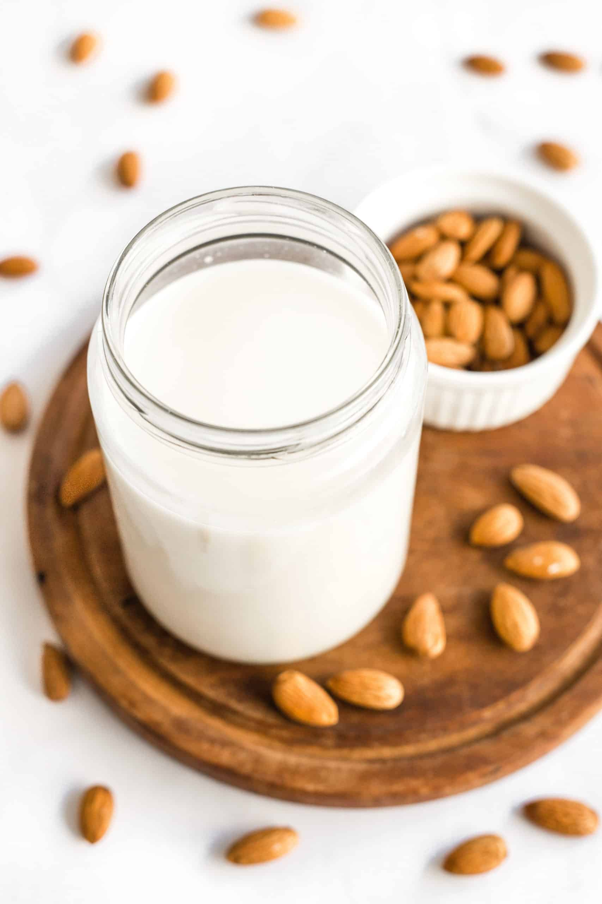

How to Make Almond Milk

Who would have thought that all you needed to make almond milk was almonds, water, and time.
Ingredients
- 1 cup of raw almonds (soaked overnight)
- 5 cups of filtered water
- 1 pinch of salt
- 2 whole dates
- 1 tsp vanilla extract (optional for vanilla almond milk)
Instructions
- Add your soaked almonds, water, salt, and optional add-ins to a blender and blend until creamy and smooth. Keep it running for at least 1-2 minutes so you get the most out of your almonds.
- Strain using a nut milk bag.
- Transfer milk to a jar or covered bottle and refrigerate. Will keep for up to 4-5 days, though best when fresh. Shake well before drinking, as it tends to separate.